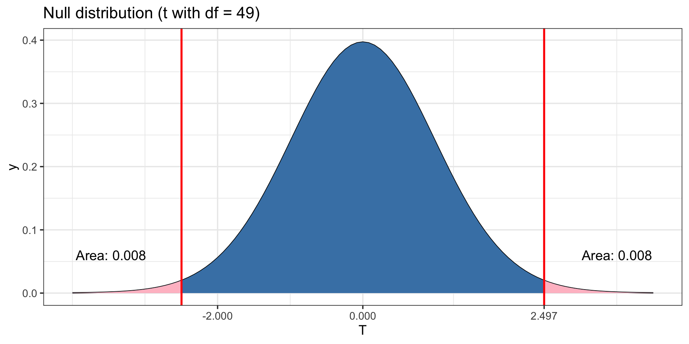

[1] 2.009575
Theory Based Inference IV
Megan Ayers
Stat 141 | Fall 2026
Friday, Week 12
Brief announcement
- Summary tables for theory-based inference methods now posted on the course website
Goals for today
Perform inference on the difference in two means
Recap Theory-Based Inference so far
Work on an activity with difference in means
Inference for a Difference in Means
Difference in Means
Today, we’ll study inference on a difference in means, \(\mu_1-\mu_2\)
“Difference in Means” comes up all the time in the real world:
- Are average home prices in Portland and Seattle different?
- Does coffee improve test performance (compared to a control)?
- Is there a difference in birth weight for babies whose birth parent smoked?
- To answer these questions, we’ll perform inference.
- But we need (yet again) to derive a new sampling distribution
Difference in Means: Populations, Parameter, Samples, Statistic
Populations: Population 1, and Population 2
Parameter: The parameter is: \(\mu_1 - \mu_2\) = Difference in population means, where
- \(\mu_1\)=Mean in Population 1
- \(\mu_2\)=Mean in Population 2
Samples:
- Sample 1: \(n_1\) individuals from Population 1
- Sample 2: \(n_2\) individuals from Population 2
Statistic: The statistic is: \(\bar{x}_1 - \bar{x}_2\) = Difference in sample means, where
- \(\bar{x}_1\)=Mean in Sample 1
- \(\bar{x}_2\)=Mean in Sample 2
Distribution of a Difference in Means
We know the (large-sample) sampling distributions of \(\bar{x}_1\) and \(\bar{x}_2\) individually:
\[ \begin{align*} \bar{x}_1 &\sim \text{Normal} \biggr( \mu_1, \frac{\sigma_1}{\sqrt{n_1}} \biggr) \\ \bar{x}_2 &\sim \text{Normal} \biggr( \mu_2, \frac{\sigma_2}{\sqrt{n_2}} \biggr) \end{align*} \]
where \(\sigma_1\) and \(\sigma_2\) are the SDs in the populations.
We also know that for z-scores under certain conditions,
\[ \begin{align*} &\frac{\bar{x}_1 - \mu_1}{s_1 / \sqrt{n_1}} \sim t(df=n_1-1) \\ &\frac{\bar{x}_2 - \mu_2}{s_2 / \sqrt{n_2}} \sim t(df=n_2-1) \end{align*} \]
where \(s_1\) and \(s_2\) are the SDs in the samples.
- Main Takeaway: Were we to do Inference for One Mean for each sample, we could use
- The “Z-Score Way” of calculating Hypothesis Test P-Values
- The Standard-Error Method of calculating Confidence Intervals
- Both using the \(t\)-distribution: \(df=n_1-1\) for Sample 1, and \(df=n_2-1\) for Sample 2.
Distribution of a Difference in Means
Parameter: \(\mu_1 - \mu_2\) = Difference in population means
Statistic: \(\bar{x}_1 - \bar{x}_2\) = Difference in sample means
Again, we’ll be using the:
- The “Z-Score Way” of calculating Hypothesis Test P-Values
- The Standard-Error Method of calculating Confidence Intervals
But first need to derive the distribution of the standardized statistic \[ \color{red}{\frac{(\bar{x}_1 - \bar{x}_2) - (\mu_1 - \mu_2)}{\widehat{SE}}} \] where \(\widehat{SE}\) will be a formula where we replace \(\sigma_1\) with \(s_1\) and \(\sigma_2\) with \(s_2\).
But what is that formula for the SE?
Reminder: Subtracting (Independent) Normal Distributions
Differences of Normal Distributions: Given two independent normal distributions
\[ \begin{align*} X \sim \text{Normal}(\mu_X, \sigma_X) \qquad \text{and} \qquad Y \sim \text{Normal}(\mu_Y, \sigma_Y) \end{align*} \]
Then,
\[ \begin{align*} \color{red}{\boxed{X - Y \sim N\biggr(\mu_X - \mu_Y, \sqrt{\sigma_X^2 + \sigma_Y^2} \biggr)}} \end{align*} \]
Mean: Difference in the means of the two distributions
SD: A “combination” of the SDs of the two distributions (that is larger)
Distribution of a Difference in Means
We know:
\[ \begin{align*} \bar{x}_1 &\sim \text{Normal} \biggr( \mu_1, \frac{\sigma_1}{\sqrt{n_1}} \biggr) \\ \bar{x}_2 &\sim \text{Normal} \biggr( \mu_2, \frac{\sigma_2}{\sqrt{n_2}} \biggr) \end{align*} \]
So: \[ \color{red}{\bar{x}_1 - \bar{x}_2 \sim \text{Normal} \biggr( \mu_1 - \mu_2, \sqrt{\frac{\sigma^2_1}{n_1} + \frac{\sigma^2_2}{n_2}} \biggr)} \]
That means our standardized statistic should be: \[ \color{red}{\frac{(\bar{x}_1 - \bar{x}_2) - (\mu_1 - \mu_2)}{\sqrt{\frac{s^2_1}{n_1} + \frac{s^2_2}{n_2}}}} \]
- Q: What kind of distribution do you think this will follow?
- \(t\)-distribution! This time with \(df=\min\{n_1 -1, n_2 -1\}\)
Distribution of a Difference in Means
Theorem: Distribution of (Standardized) Difference in Means
Given two simple random samples,
- Sample 1: \(n_1\) observations; sample mean \(\bar{x}_1\); sample SD \(s_1\)
- Sample 2: \(n_2\) observations; sample mean \(\bar{x}_2\); sample SD \(s_2\)
from two populations,
- Population 1: true mean \(\mu_1\); true SD \(\sigma_1\)
- Population 2: true mean \(\mu_2\); true SD \(\sigma_2\)
the standardized difference of sample means has the approximate distribution:
\[ \frac{(\bar{x}_1 - \bar{x}_2) - (\mu_1 - \mu_2)}{\sqrt{ \frac{s^2_1}{n_1} + \frac{s_2^2}{n_2}}} \sim t\Big(\text{df}=\min\{n_1 -1, n_2 -1\}\Big) \]
when the following conditions hold:
- The two samples are independent
- \(n_1\geq30\), OR Population 1 is approximately Normally distributed
- \(n_2\geq30\), OR Population 2 is approximately Normally distributed.
Distribution of a Difference in Means: Implications
Hypothesis Tests: For the null hypothesis (\(H_0\)),
\[ H_0: \mu_1 - \mu_2 = \delta_0 \]
We will first turn our statistic \(\bar{x}_1 - \bar{x}_2\) into a “Z-Score” (assuming \(H_0\)),
\[ \frac{(\bar{x}_1 - \bar{x}_2) - \delta_0}{\sqrt{ \frac{s^2_1}{n_1} + \frac{s_2^2}{n_2}}} \]
- The P-Value is the probability we get the above or anything more extreme in the direction of \(H_a\) according to a \(t\)-distribution with \(\text{df}=\min\{n_1 -1, n_2 -1\}\).
- Often, \(\delta_0 = 0\) (i.e., \(H_0: \mu_1 - \mu_2 =0\))
Distribution of a Difference in Means: Implications
Confidence Intervals: For a \(C%\) interval, we calculate
\[ \underbrace{(\bar{x}_1 - \bar{x}_2)}_{\text{Statistic}} \pm t^{*} \underbrace{\sqrt{ \frac{s^2_1}{n_1} + \frac{s_2^2}{n_2}}}_{\widehat{\text{SE}}} \]
where \(t^*\) is the appropriate critical value (using the \((\frac{100+C}{2})\)th percentile) from a \(t\)-distribution with \(\text{df}=\min\{n_1 -1, n_2 -1\}\).
Example: Penguin Weight, by Species
Ex: Do Adelie penguins and Gentoo penguins differ by weight?
Samples: We randomly sample each penguin species:
Adelie: \(n_1=50\), \(\bar{x}_1=36.1\) pounds, \(s_1=5\) pounds.
Gentoo: \(n_2=55\), \(\bar{x}_2=32.3\) pounds, \(s_2=10\) pounds.
Conditions:
Each sample has more than 30 observations
The samples are independent
Let’s proceed with inference!
Confidence Intervals
\(t\) Distribution: \(t(\text{df}=\min\{50 -1, 55 -1\}) = \color{red}{t(\text{df}=49)}\)
Confidence Interval Our C% confidence interval is \((\bar{x}_1 - \bar{x}_2) \pm t^*\sqrt{\frac{s_1^2}{n_1}+\frac{s_2^2}{n_2}}\), where \(t^*\) is the critical value from a t-distribution with \(49\) degrees of freedom.
- For 95%, this is the 0.975 quantile:
Thus, we are 95% confident that the mean difference in weights is between \[\begin{aligned}(36.1-32.3) \pm 2.01\sqrt{ \frac{5^2}{50} + \frac{10^2}{55}} \implies 3.8\pm 3.059 \implies (0.74, 6.9) \end{aligned}\]
Conclusion?
Hypothesis Test
State Hypotheses: \[ H_0: \mu_{1} - \mu_{2} = 0 \qquad H_a: \mu_{1} - \mu_{2} \neq 0 \]
Null Distribution: \[\frac{(\bar{x}_1 - \bar{x}_2) - (0)}{\sqrt{ \frac{s_1^2}{n_1} + \frac{s_2^2}{n_2}}} \sim t\Big(\text{df}=\min\{n_1 -1, n_2 -1\}\Big)\]
Standardized Statistic: Turn the observed statistic \((\bar{x}_1 - \bar{x}_2)\) into a Z-Score (assuming \(H_0\)), \[\frac{(36.1-32.3)-(0)}{\sqrt{\frac{5^2}{50}+\frac{10^2}{55}}} = 2.497\]
Hypothesis Test (continued)
Calculate p-value:
Null Distribution: \(t(\text{df}=49)\)
Standardized Statistic: \(2.497\)
Two-sided hypothesis test

- Conclusion: The P-Value = 0.016, so we reject null hypothesis with a significance level of \(\alpha = 0.05\) (but not \(\alpha = 0.01\)).
Recap: Theory-Based Inference
Steps
Especially when relying on standardization (i.e., Z Scores), the theory-based inference procedures we’ve studied follow the same general steps.
1. Determine what parameter are we estimating
- Single mean or proportion? Difference in means or proportions?
2. Check conditions for inference
- e.g., for one proportion: 10 or more successes and 10 or more failures
3. Use theoretical distribution to conduct a hypothesis test or confidence interval
Hypothesis Test: Turn statistic into a \(Z\)-Score
\[ \frac{\text{Statistic} - \text{Null Value}}{\text{SE}} \]
and calculate the corresponding P-Value according to
- The standard normal distribution (for proportions), or
- the appropriate \(t\)-distribution (for means).
Confidence Interval: Calculate
\[ \text{Statistic} \pm \text{Critical_Value}*SE \]
where the \(\text{Critical_Value}\) is the appropriate quantile from
- The standard normal distribution (for proportions), or
- the appropriate \(t\)-distribution (for means).
Activity: Average Home Price between Seattle and Portland
Suppose you’re interested in comparing average home price between Seattle and Portland
- You randomly sample \(n_1=50\) Seattle homes, and find \(\bar{x}_1=0.95M\), \(s_1=0.15M\).
- You randomly sample \(n_2=35\) Portland homes, and find \(\bar{x}_2=0.70M\), \(s_2=0.35M\).
With Neighbor(s): Choose a question below and work through it on the board.
Confidence Intervals
Find a 80% confidence interval for the difference in average home price.
Are we 80% confident there’s actually a difference?
Hypothesis Testing
You’ve heard there’s no difference between Seattle and Portland!
Test your claim using a hypothesis test (with a significance level of \(\alpha = 0.01\)).
If you finish early, do the other question!
Next time:
- Start inference for regression!